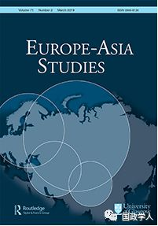
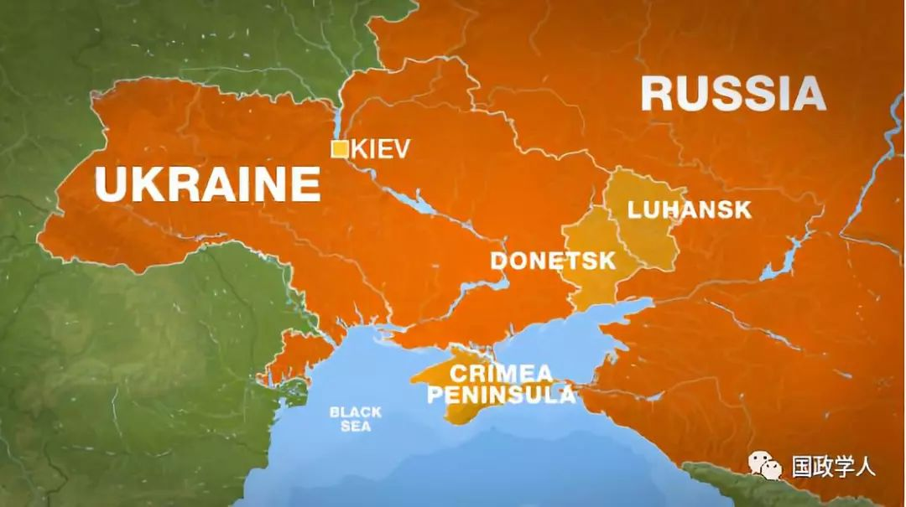
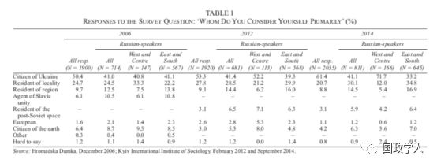
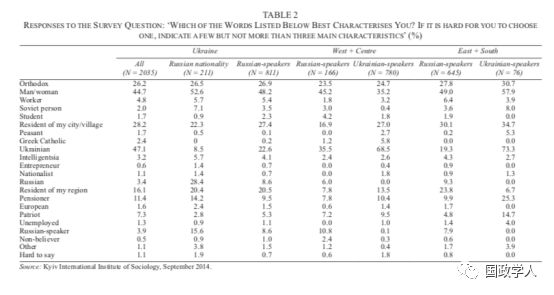
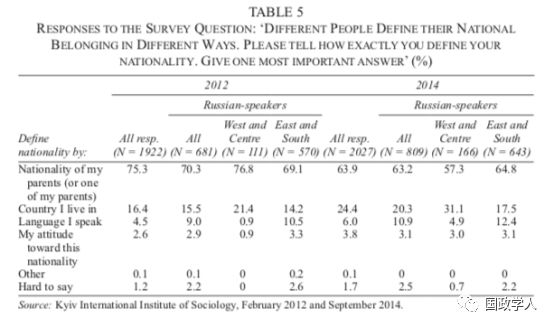
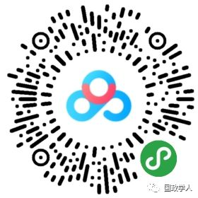

收录于合集

简 介
【作者】 Volodymyr Kulyk，乌克兰国家科学院政治与族群研究所(Institute of Political and Ethnic Studies, National Academy of Sciences of Ukraine)研究员。
【编译】 高嘉琳
【审校】 陈成龙 高嘉琳
【来源】 Europe-Asia Studies, 2019. Vol. 71, No. 1, January 2019, 156-178，ISSN:0966-8136(Print)/1456-3427(Online)
【期刊】 Europe-Asia Studies为每年出刊10期的学术期刊，由Routledge代表格拉斯格大学中东欧研究部门(University of Glasgow)出版。主要关注前苏联地区国家的政治、经济、社会议题，及这些国家20世纪的历史。
【期刊网址】 https://www.tandfonline.com/loi/ceas20


后苏联 时代乌克兰境内俄语使用者的身份认同转变 ****
Identity in Transformation: Russian-speakers in Post-Soviet Ukraine
内容提要
本文旨在探讨乌克兰独立后，境内俄语使用者身份认同的转变。根据问卷调查、焦点小组及公共论述，研究发现此群体在持续使用俄语的同时，基于日常生活经验对于自身作为乌克兰公民的认同亦日益提升。虽然许多学者认为苏联解体后乌克兰境内俄语使用者会因语言而形成特定群体，然近期研究显示他们反而在惯用语言没有太大转变的情况下，对乌克兰认同感有不断增进的趋势。
Making sense of people speaking Russian ****
许多学者认为居住在乌克兰、各前苏联加盟共和国的俄罗斯人 (ethinic Russians)普遍具有强烈族群认同，甚至被称为「新俄罗斯社群(new Russian diaspora)」。根据本文作者，前期学界以前述地区的抗议、领土划分等政治性议题为研究主轴，其中以Andrew Wilson为例，将他用具有建构族群认同特点的言语来研究乌克兰内部身份认同议题；至后期，学界关注点由政治性回应转为文化性回应，以David Laitin为例，认为乌克兰（与哈萨克斯坦相仿）境内俄语使用者并不寄希望于获益于社会流动。最后，本文作者分就学界对此领域微观、宏观的研究成果略作综述。
Competing identifications of Russian-speakers ****
本文作者在本段就问卷调查资料，针对两个问题的回答来探讨乌克兰境内人口对于乌克兰、俄罗斯（或俄语使用）的认同状况 ——其一以地域作为衡量标准之一，希望理解受试者的自我认同。本文作者根据表一分析指出，基于人口分布差异、历史居住地，身份认同有较大出入；其二，本文作者根据表二，以性别、宗教、职业、意识形态等标准作为辅助，试图比较其他因素对于乌克兰人身份认同的影响，得出乌克兰中、西部较东、南部俄语使用者更倾向于认同「乌克兰人」的身份。


Changing meaning of Ukrainianness ****
乌克兰境内俄语使用者的认同倾向，由族群导向到公民导向的转变，实际上隐含了「乌克兰人」一词的意义变化。作者在此段亦利用调查资料（见表三）检视传统以族群作为认同主体的观点在乌克兰社会中的消长。
此外，根据另一项调查（见表四），在受试者不受限于单一认同的前提之下，部分填答者的认同倾向便有所差异。
最后，本文作者根据表五指出，在两调查中大部分受试者的认同为亲缘导向（父母国籍），然此倾向的影响力因公民导向认同（居住国家）渐渐式微，作者更进而分就身份认同相异者的想法略作比较，认为纵使乌克兰境内俄语使用者对于「乌克兰人」的认同感呈现增加趋势，但与他们持续使用俄语不相互冲突。

Discussion and conclusion ****
就乌克兰境内俄语使用者身份认同的讨论中重要因素之一为地理分界 ——俄语使用者和乌克兰社群间没有显著分野。在乌克兰政府试图平衡两方利益的同时，因为教育、生活经验，境内俄语使用者对于乌克兰的认同也在渐渐提升。和俄罗斯间的战争，激起乌克兰公民保卫国家免于外国军队攻击的意识，亦被普遍认为是促使乌克兰认同感程度提升的因素之一。
本文由国政学人微信公众平台独家首发
** 扫描下方小程序码查看原文p df**

更多阅读
【重磅新著】阎学通：Leadership and the Rise of Great Powers刚刚出版！
【学术随笔】唐世平：迈向“深度多元主义”的“全球国际关系（学）”
【最新评论】江忆恩：不稳定的基础：特朗普对华政策的“知识结构”——对《百年马拉松》的评论 | 国政学人
【地区秩序】阿米塔夫·阿查亚：权力转移还是范式变化？中国崛起与亚洲新兴安全秩序 | 国政学人
【名家之言】米尔海斯默、斯蒂芬·沃尔特：离岸平衡案例研究——美国的超级战略
【FA重磅】米尔斯海默等：离岸平衡手——美国优越的大战略 | 国政学人
国政学人 （ID：guozhengxueren)
为方便学人及时阅读高质量文章
别忘把国政学人设置 星标 哦~